library(alr4)
# invlogit <- plogis
logistic_function <- function(fn_formula, data, predict = F) {
number_omitted <- nrow(data) - nrow(na.omit(data))
data <- na.omit(data)
vars <- all.vars(as.formula(fn_formula))
y_name <- vars[1]
x_name <- vars[2:length(vars)]
n <- nrow(data)
Y <- matrix(data[, y_name], nrow = n, ncol = 1)
X <- matrix(cbind(rep(1, n)))
# take in categorical data
var_names <- vector("character")
for (i in x_name) {
if (suppressWarnings(all(!is.na(as.numeric(as.character(data[, i])))))) {
X <- cbind(X, as.numeric(as.character(data[, i])))
var_names <- c(var_names, i)
} else {
categories <- sort(unique(data[, i]))
for (j in categories[2:length(categories)]) {
new_col_name <- paste0(i, j)
new_col <- ifelse(data[, i] == j, 1, 0)
X <- cbind(X, new_col)
var_names <- c(var_names, new_col_name)
}
}
}
optim_logistic <- function(beta, X, Y) {
beta <- as.matrix(beta, nrow = 4)
pi <- plogis(X %*% beta)
loglikelihood <- -sum(Y * log(pi) + (1 - Y) * log(1 - pi))
return(loglikelihood)
}
result <- optim(par = rep(0, ncol(X)), fn = optim_logistic, X = X, Y = Y, hessian = T)
OI <- solve(result$hessian)
se <- sqrt(diag(OI))
t_statistic <- result$par / se
df <- nrow(X) - ncol(X)
p_value <- 2 * pnorm(-1 * abs(t_statistic))
# https://stats.stackexchange.com/questions/52475/how-are-the-p-values-of-the-glm-in-r-calculated
coef <- rbind(result$par, se, t_statistic, p_value)
colnames(coef) <- c("(Intercept)", var_names)
rownames(coef) <- c("Estimate", "Std. Error", "z value", "p value")
coef <- t(coef)
b_hat <- result$par
predictions <- plogis(X %*% b_hat)
if (predict) {
return(predictions)
} else {
return(coef)
}
}Logistic
Introduction
Logistic regression is used when the outcome variable is discrete and binary, which is called classification. Multinomial logistic regression can classify observations into more than two categories, but we are only doing simple logistic regression here, with two categories. We use the inverse logit function to model the probability that \(Y_i = 1\).
\[
logit^{-1}(x)=\frac{e^x}{1+e^x} \\
Pr(y_i=1) = logit^{-1}(X_i\beta)
\]plogis is the invlogit function.
Uses
Logistic regression is good for when covariates are continuous, as the outcome variables are bounded between 0 and 1, through the logit link.
Assumptions
- For binary logistic regression, that outcome variables are binary
- Independence of errors
- Linear relationship between the outcome variable and log odds of the predictor variables
- No multicollinearity
Our Logistic Regression Implementation
Creating testing data set with a single predictor variable to compare our implementation with glm logistic function
# create fake data
x1 <- rnorm(100, 2, 1)
prob <- plogis(-1 + 0.5 * x1)
y <- rbinom(100, 1, prob)
sim_data <- data.frame(y, x1)
# compare DIY logistic function with glm
fit_sim_data_1 <- glm(y ~ x1, data = sim_data, family = binomial)
summary(fit_sim_data_1)$coef Estimate Std. Error z value Pr(>|z|)
(Intercept) -0.7456721 0.5316508 -1.402560 0.16074811
x1 0.5410003 0.2427422 2.228703 0.02583366logistic_function(fn_formula = "y ~ x1", data = sim_data) Estimate Std. Error z value p value
(Intercept) -0.7459709 0.5316604 -1.403097 0.16058801
x1 0.5410940 0.2427464 2.229051 0.02581053# checking for linear relationship
plot(sim_data$x1, prob,
main = "The log odds of y and x1 have a linear relationship", cex.main = 0.6,
xlab = "x1", ylab = "y"
)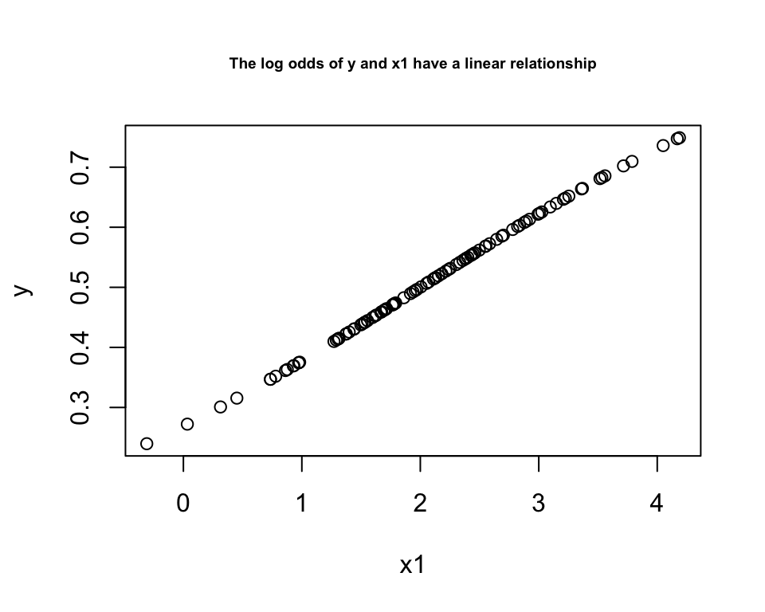
# check for correlation of residuals vs fit
plot(fit_sim_data_1, which = 1)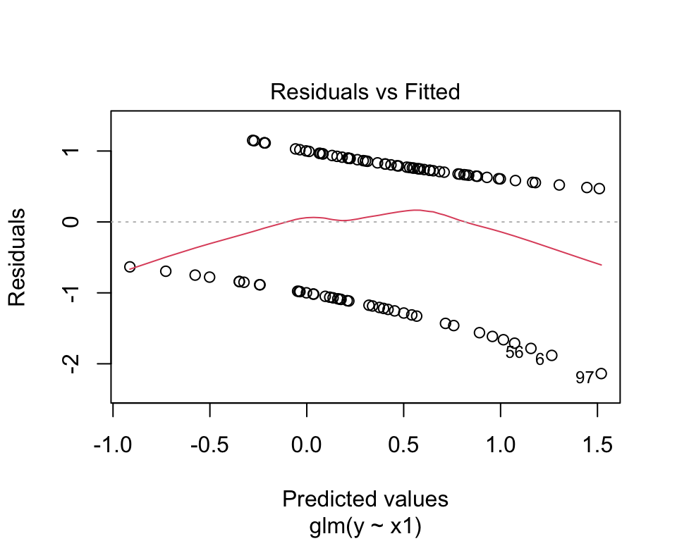
Creating testing data set with multiple covariates to compare our implementation with glm logistic function
# create fake data with multiple x's
x1 <- rnorm(100, 2, 1)
x2 <- rnorm(100, 4, 1)
x3 <- rnorm(100, 6, 1)
prob <- plogis(-1 + x1 + x2 - 0.5 * x3)
y <- rbinom(100, 1, prob)
sim_data <- data.frame(y, x1, x2, x3)
# compare DIY logistic function with glm
fit_sim_data <- glm(y ~ x1 + x2 + x3, data = sim_data, family = binomial)
summary(fit_sim_data)$coef Estimate Std. Error z value Pr(>|z|)
(Intercept) 2.4011218 2.4617714 0.9753634 0.329380012
x1 1.3097873 0.4646174 2.8190663 0.004816356
x2 0.9528707 0.3591008 2.6534911 0.007966387
x3 -1.1133007 0.3837826 -2.9008631 0.003721364logistic_function(fn_formula = "y ~ x1 + x2 + x3", data = sim_data) Estimate Std. Error z value p value
(Intercept) 2.4003220 2.4618335 0.9750139 0.329553343
x1 1.3102691 0.4646817 2.8197132 0.004806659
x2 0.9530523 0.3591195 2.6538587 0.007957715
x3 -1.1134496 0.3838115 -2.9010321 0.003719358Using the alr4 Donner data to test categorical data, and compare our implementation with glm logistic function
Donner$survived <- Donner$y == "survived"
fit_Donner <- glm(survived ~ age + sex + status, data = Donner, family = "binomial")
summary(fit_Donner)$coef Estimate Std. Error z value Pr(>|z|)
(Intercept) 1.4873491 4.926432e-01 3.019120666 0.002535095
age -0.0281043 1.504262e-02 -1.868311545 0.061718658
sexMale -0.7279889 5.172218e-01 -1.407498622 0.159279585
statusHired -0.5985928 6.281956e-01 -0.952876467 0.340652665
statusSingle -17.4555740 1.765537e+03 -0.009886838 0.992111573logistic_function(fn_formula = "survived ~ age + sex + status", data = Donner) Estimate Std. Error z value p value
(Intercept) 1.50395496 0.49431184 3.0425226 0.002346042
age -0.02838637 0.01507534 -1.8829672 0.059704810
sexMale -0.74855738 0.51805480 -1.4449386 0.148475138
statusHired -0.58665853 0.62833280 -0.9336748 0.350471646
statusSingle -6.48117449 12.14886686 -0.5334798 0.593701523Interpretation of the coefficients
A 1-unit difference in age corresponds to -0.02 in the logit probability of having survived in the Donner party, or a multiplicative change of \(e^{-0.0283}=0.972\) in the odds of surviving.
ggplot(Donner) +
geom_jitter(aes(x = age, y = survived, color = survived)) +
facet_wrap(vars(status)) +
ggtitle("Younger people generally had a higher chance of surviving")Warning: Removed 3 rows containing missing values (`geom_point()`).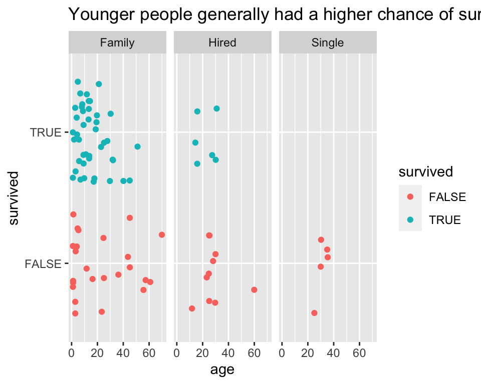
Show that our implementation of logistic regression can also make predictions
idx <- sample(1:nrow(Donner), 5)
p1 <- logistic_function(fn_formula = "survived ~ age + sex + status", data = Donner, predict = T)[idx, ]
p2 <- predict(fit_Donner, type = "response")[idx]
compare_predict_data <- data.frame(p1, p2)
colnames(compare_predict_data) <- c("Our implementation", "GLM")
kable(compare_predict_data, digits = 3, caption = "Comparison of logistic prediction", booktabs = TRUE, valign = "t") |> kable_styling(latex_options = "HOLD_position")| Our implementation | GLM | |
|---|---|---|
| Breen_Margaret_Isabella | 0.814 | 0.811 |
| Breen_Patrick | 0.334 | 0.338 |
| Spitzer_Augustus | 0.001 | 0.000 |
| Donner_Isaac | 0.649 | 0.650 |
| Foster_Sarah_Ann_Charlotte_Murphy | 0.724 | 0.722 |
Function to check assumptions
test_logistic_assumptions <- function(fn_formula, data) {
n <- nrow(data)
vars <- all.vars(as.formula(fn_formula))
y_name <- vars[1]
Y <- data[, y_name]
# outcome variables are binary
if (length(unique(Y)) == 2) {
assp_1 <- paste("Binary outcomes assumption is met.")
} else {
return(paste("Binary outcomes assumption is not satisfied. There are", length(unique(Y)), "outcomes."))
}
x_name <- vars[2:length(vars)]
X <- data[, x_name]
preds <- logistic_function(fn_formula = fn_formula, data = data, predict = T) # predictions are in probability
logit_vals <- log(preds / (1 - preds))
plot_data <- data.frame(logit_vals, X) |> gather(key = "predictors", value = "predictor_value", -logit_vals)
# Linear relationship between the outcome variable and log odds of the predictor variables
assp_2 <- ggplot(plot_data, aes(logit_vals, predictor_value)) +
geom_point(size = 0.5, alpha = 0.5) +
geom_smooth(method = "loess") +
theme_bw() +
facet_wrap(~predictors, scales = "free_y")
# Independence of errors
# plot residuals vs fits
model <- glm(fn_formula, data = data, family = binomial)
assp_3 <- plot(model, which = 1)
# No multicollinearity
assp_4 <- cor(data[, -1])
predicted.values <- ifelse(preds >= 0.5, 1, 0)
check_perf <- data.frame(Y, predicted.values) |> mutate(correct = Y == predicted.values)
check_perf <- paste0(mean(check_perf$correct) * 100, "% classified correctly")
return(list(assp_1, assp_2, print(assp_3), assp_4, check_perf))
}
n <- 200
x1 <- rnorm(n, 2, 1)
x2 <- rnorm(n, 4, 1)
prob <- plogis(-1 + 1.2 * x1 - 0.5 * x2)
hist(prob)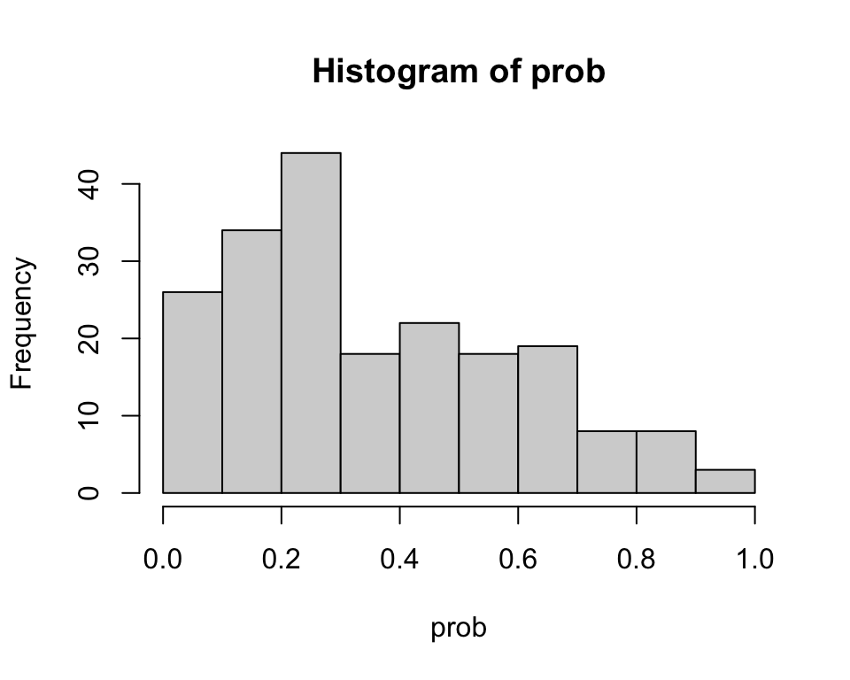
y <- rbinom(n, 1, prob)
sim_data <- data.frame(y, x1, x2)
test_logistic_assumptions(fn_formula = "y ~ x1 + x2", data = sim_data)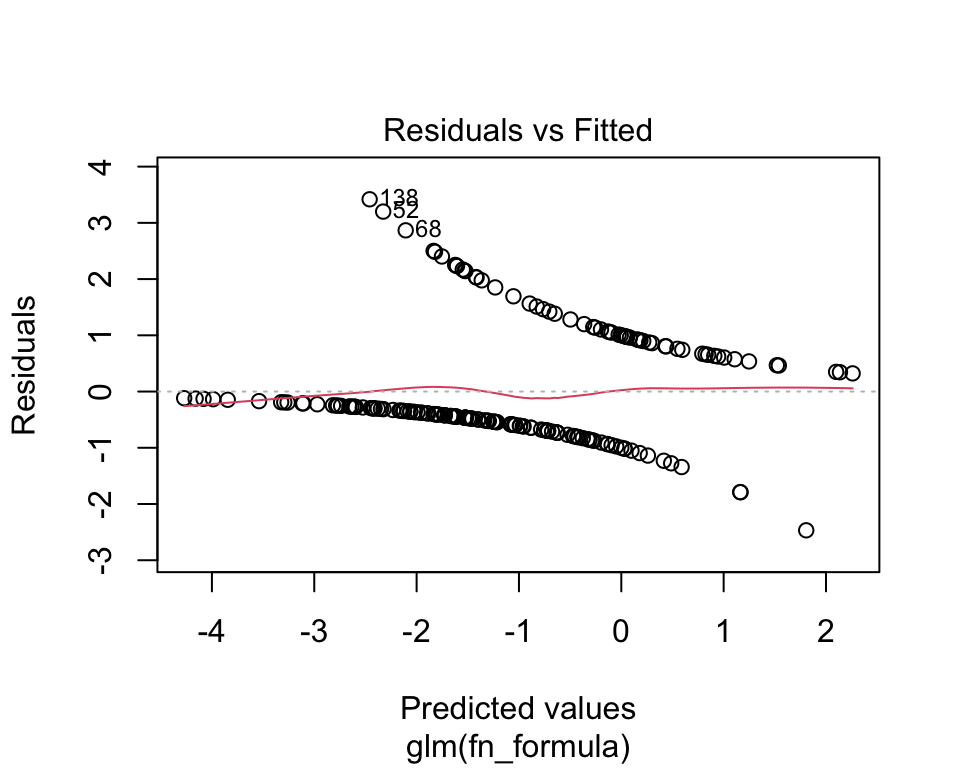
NULL[[1]]
[1] "Binary outcomes assumption is met."
[[2]]`geom_smooth()` using formula = 'y ~ x'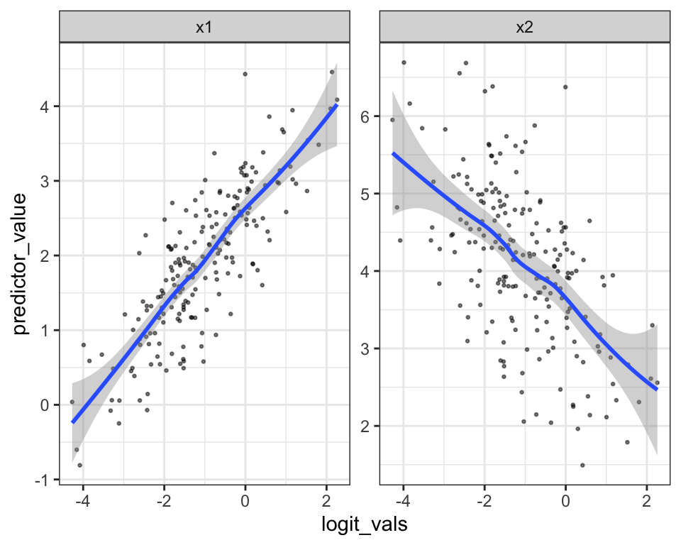
[[3]]
NULL
[[4]]
x1 x2
x1 1.000000 -0.018217
x2 -0.018217 1.000000
[[5]]
[1] "78.5% classified correctly"For binary logistic regression, that outcome variables are binary
Check how many unique outcome variables there are.
Independence of errors
Check residual plots.
Linear relationship between the outcome variable and log odds of the predictor variables
Check scatterplots of log odds vs predictor variables to see that there is an approximately linear relationship.
No multicollinearity
Look at the correlation matrix, generally any value over 0.9 is problematic.
Breaking assumptions
1. For binary logistic regression, that outcome variables are binary
n <- 100
x1 <- rnorm(n, 2, 1)
prob <- plogis(-1 + 0.8 * x1)
y <- rpois(n, prob)
bad_data <- data.frame(y, x1)
test_logistic_assumptions(fn_formula = "y ~ x1", data = bad_data)[1] "Binary outcomes assumption is not satisfied. There are 4 outcomes."2. Independence of errors
n <- 100
x1 <- rnorm(n, 2, 1)
x2 <- rnorm(n, 0, 1)
prob <- plogis(-1.2 + 0.4 * x1 + 0.3 * x2 + rbeta(n, 2, 2))
hist(prob)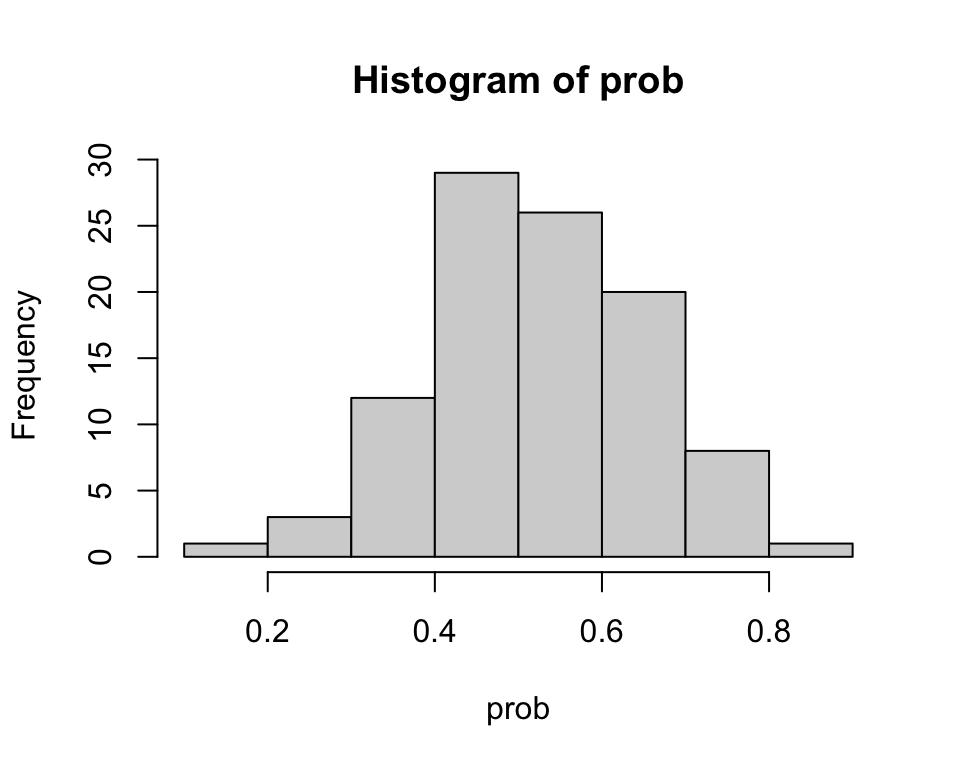
y <- rbinom(n, 1, prob)
bad_data <- data.frame(y, x1, x2)
test_logistic_assumptions(fn_formula = "y ~ x1 + x2", data = bad_data)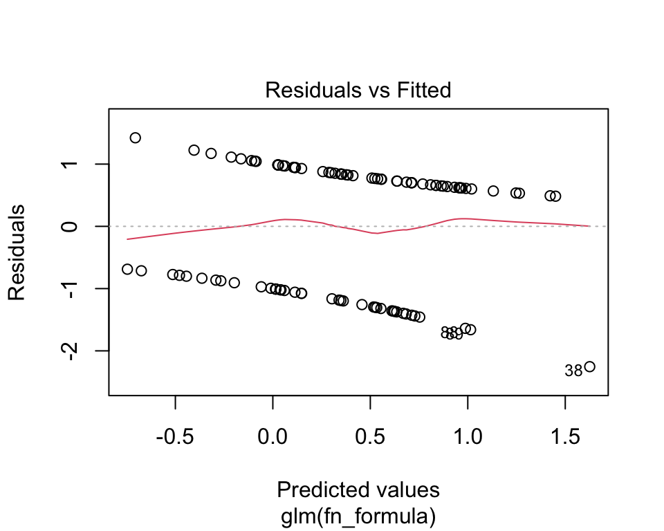
NULL[[1]]
[1] "Binary outcomes assumption is met."
[[2]]`geom_smooth()` using formula = 'y ~ x'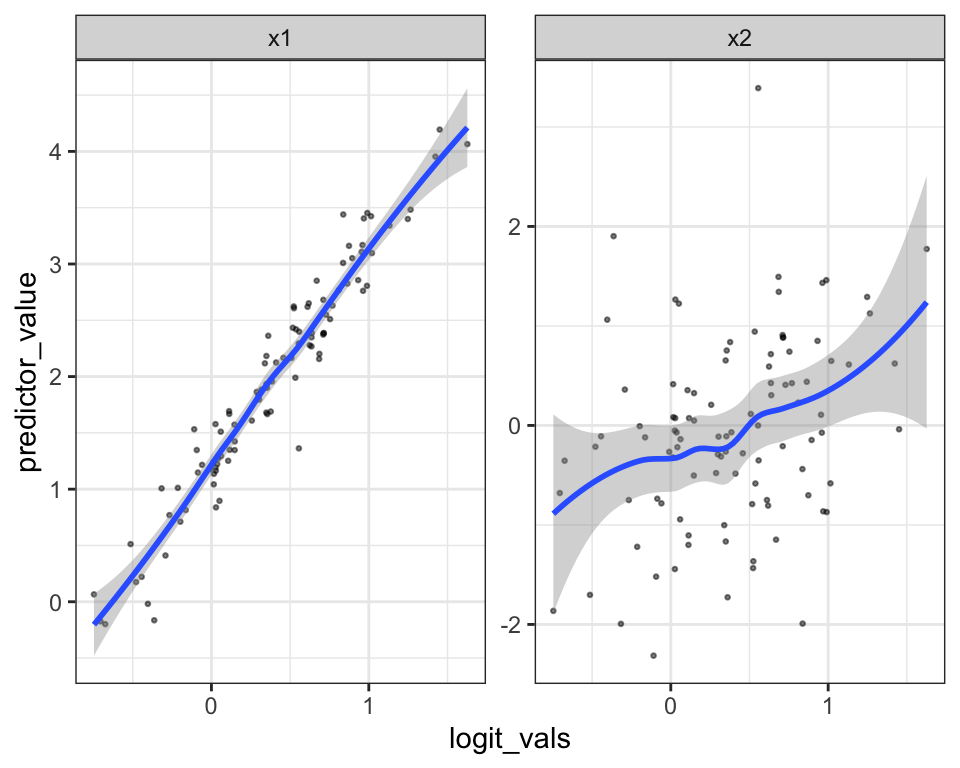
[[3]]
NULL
[[4]]
x1 x2
x1 1.00000000 0.09361225
x2 0.09361225 1.00000000
[[5]]
[1] "62% classified correctly"I used rbeta to introduce more error for the middle of the probabilities, which shows in the residual plot, where it looks like there is a peak in the fitted line around 0.
3. Linear relationship between the outcome variable and log odds of the predictor variables
n <- 100
x1 <- rnorm(n, 0, 1)
x2 <- rnorm(n, 2, 1)
x3 <- rnorm(n, -2, 1)
prob <- plogis(-1 + x1 * x2 + 1.3 * x2 - 0.5 * x3^2)
hist(prob)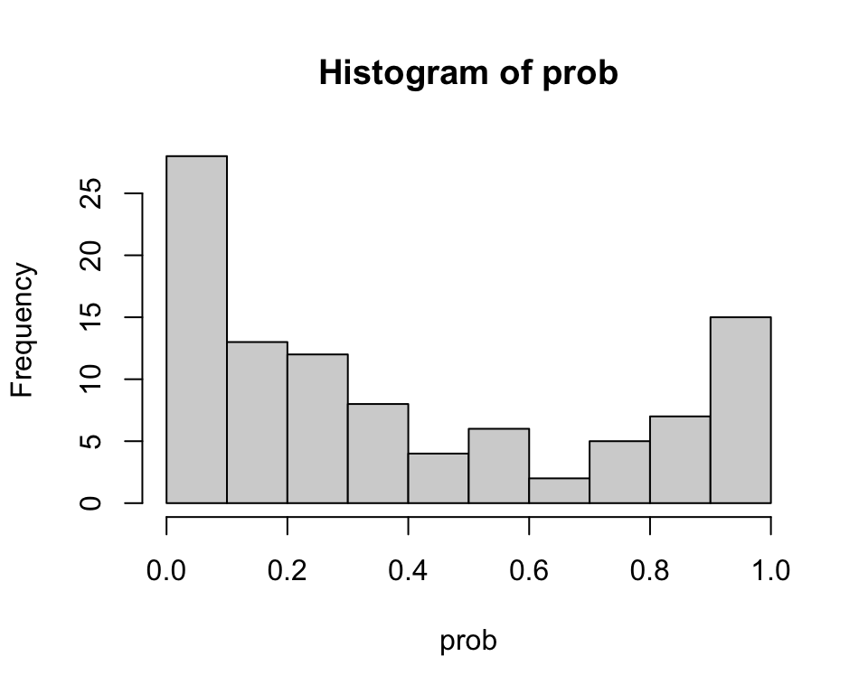
y <- rbinom(n, 1, prob)
bad_data <- data.frame(y, x1, x2, x3)
test_logistic_assumptions(fn_formula = "y ~ x1 + x2 + x3", data = bad_data)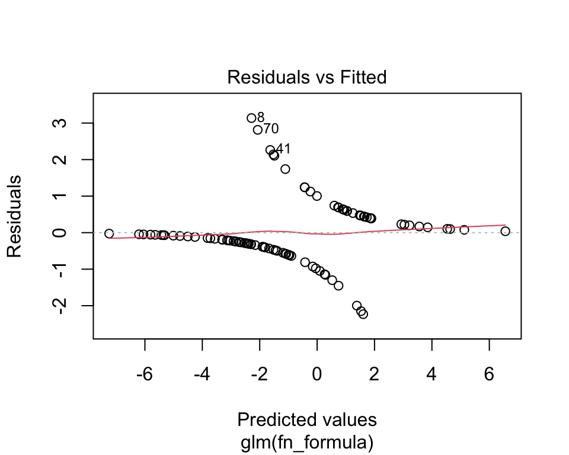
NULL[[1]]
[1] "Binary outcomes assumption is met."
[[2]]`geom_smooth()` using formula = 'y ~ x'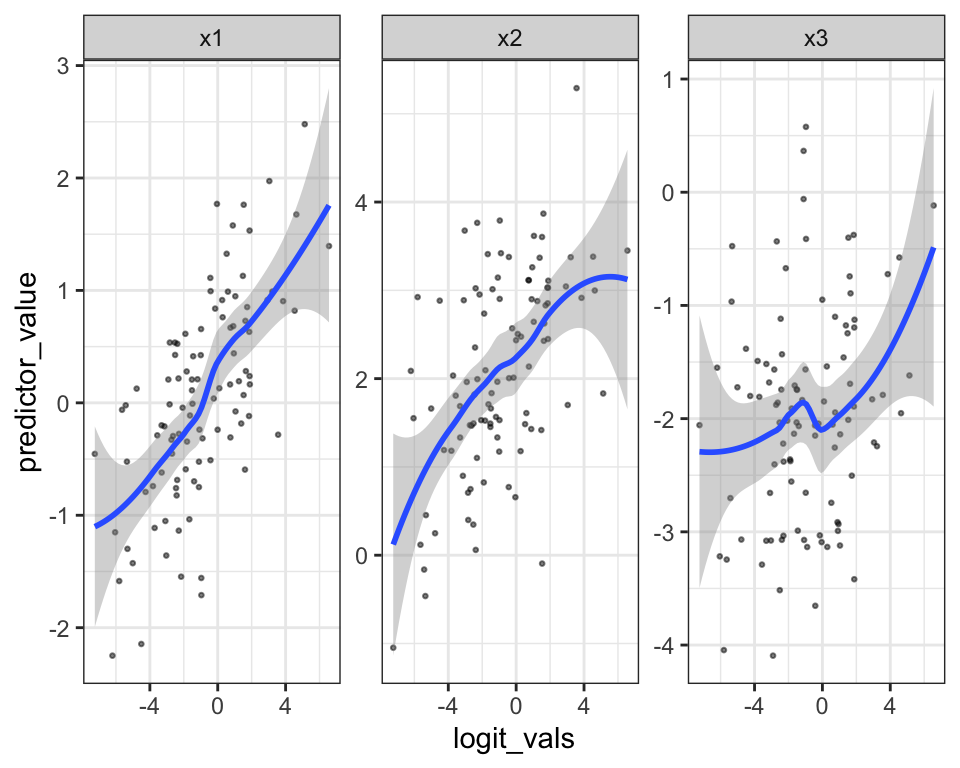
[[3]]
NULL
[[4]]
x1 x2 x3
x1 1.0000000 -0.16860022 -0.17308515
x2 -0.1686002 1.00000000 0.02992617
x3 -0.1730851 0.02992617 1.00000000
[[5]]
[1] "82% classified correctly"For the probability used in the DGP, it is no longer a linear relationship of \(X_i\beta\) but one that involves interactions and squared variables. The non-linear relationship is visible in the plots of the outcome variable vs log odds of each predictor variable.
4. No multicollinearity
n <- 100
x1 <- rnorm(n, 0, 1)
x2 <- rnorm(n, x1, 0.2)
prob <- plogis(-1 + x1 + 0.5 * x2)
hist(prob)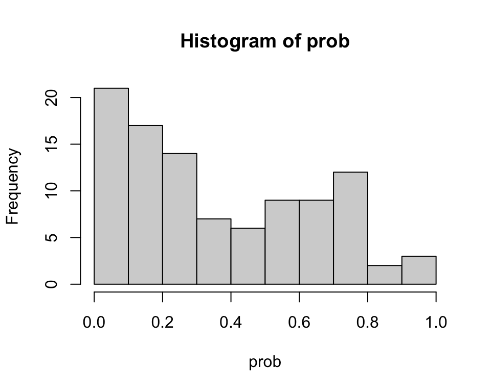
y <- rbinom(n, 1, prob)
bad_data <- data.frame(y, x1, x2)
test_logistic_assumptions(fn_formula = "y ~ x1 + x2", data = bad_data)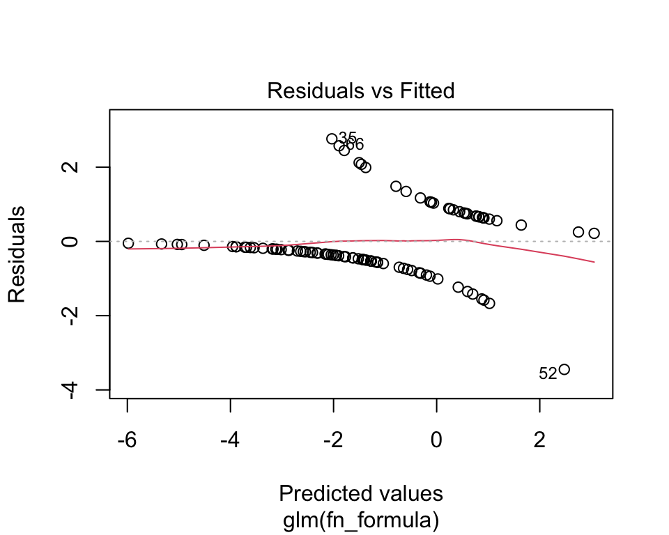
NULL[[1]]
[1] "Binary outcomes assumption is met."
[[2]]`geom_smooth()` using formula = 'y ~ x'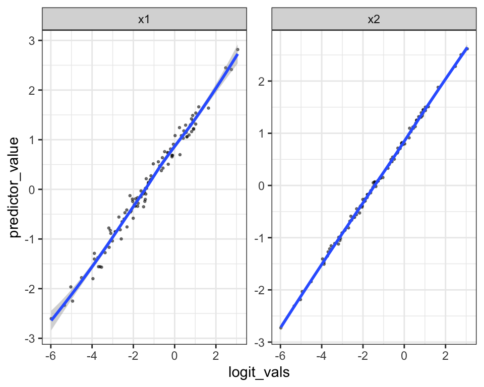
[[3]]
NULL
[[4]]
x1 x2
x1 1.0000000 0.9847734
x2 0.9847734 1.0000000
[[5]]
[1] "80% classified correctly"The DGP involves \(x2\) being created from an rnorm around the mean of \(x1\), and a small SD so that it is even more correlated. The correlation matrix shows a problematically high correlation. The model still classifies fairly well, but what happens with multicollinearity is that it becomes difficult for the model to estimate the relationship between each predictor variable and the outcome variable independently because the predictor variables tend to change in unison. The p-values are also less trustworthy.
Next Steps
- Instead of just using maximum likelihood, we could try using iteratively reweighted least squares or Newton-Ralphson.
Conclusion
Breaking certain assumptions do not make the logistic model classify worse. Independence of errors seems to be the worst case, but the rest do not change the correct classification rate much.